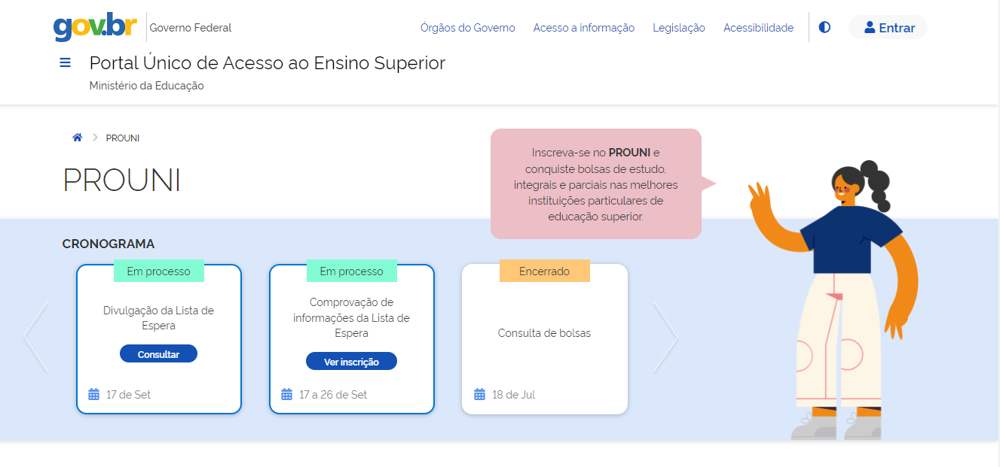
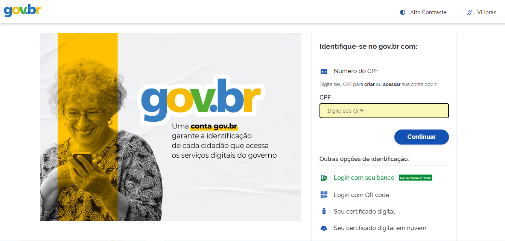
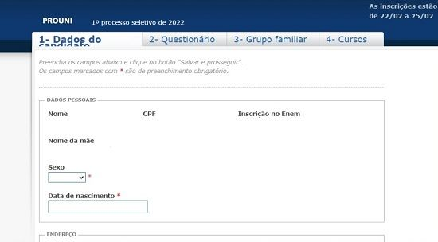

Programa de Bolsas
O Programa oferece cerca de 288 mil bolsas parciais e integrais em instituições de ensino superior particulares em todo o país.
Como é a inscrição no PROUNI?
1º) Acesse o site do GOVERNO para poder realizar as inscrições.
2º) Cadastre o seu login único do Governo Federal e preencha com o seu CPF e senha. Se for o primeiro acesso, crie login e senha no portal gov.br.
3º) Preencha os campos necessários.
4º) Selecione, na ordem da sua preferência, até duas opções de instituição de ensino, local de oferta, curso, turno, tipo de bolsa e modalidade de concorrência.

Pronto, agora você já é um forte candidato a ingressar em uma universidade particular por meio do Prouni. Acompanhe com frequência o portal Acesso Único para saber a sua classificação.
As bolsas integrais ou parciais do Prouni estão disponíveis de acordo com a renda familiar bruta mensal per capita. Confira na página de verificação de Renda Familiar Bruta Mensal Per Capta. O participante deve ficar atento à comprovação de renda exigida na hora da matrícula na instituição de ensino.
Como escolher as opções de Bolsas 100% ou 50%? E como calculo se tenho Renda que permite a minha inscrição no PROUNI?
Para descobrir qual opção de bolsa escolher e também a Renda permitida pelo PROUNI acesse a página de Cálculo de Renda.
Por quanto tempo é a Bolsa?
A bolsa é válida para até o dobro do tempo normal de duração do curso escolhido, se um curso dura 4 anos, a bolsa pode ser estendida para até 8 anos e quando concluído, o estudante deve solicitar o encerramento da bolsa.
A bolsa não é válida para semestres restantes ou outros cursos ou especializações. A bolsa de estudo do Prouni não cobre disciplinas que não constam do currículo regular do curso, taxas para expedir documentação, ou quaisquer outros gastos, como material didático que ficam a encargo do aluno.
4.1 Prazo de validade da bolsa:
A bolsa de estudo do Prouni poderá ser utilizada durante o período equivalente a duas vezes o prazo de integralização do curso informado no Cadastro e-MEC de Instituições e Cursos Superiores do Ministério da Educação, subtraído o(s) semestre(s) já cursado(s) pelo estudante antes da concessão da referida bolsa. No entanto, ao concluir o curso o estudante deverá ter a bolsa encerrada, não podendo utilizar os semestres restantes para outros cursos ou especializações.
É claro que é possível trancar a faculdade sendo bolsista e a resposta para quanto tempo dura a bolsa do Prouni é um prazo relativamente longo: 8 anos. Porém, não é todo mundo que tem esse direito.
A bolsa incluí o pagamento da matrícula?
A bolsa do ProUni inclui o pagamento da matrícula referente a porcentagem obtida, ou seja, caso ganhe uma bolsa 100% está totalmente isento, porém, caso seja qualquer outra porcentagem terá que pagar o restante do próprio bolso, por exemplo caso ganhe uma bolsa de 75% terá que pagar os 25% restantes da matrícula, além disso, a bolsa não cobre disciplinas que não estejam no currículo básico, material didático ou expedição de documentos.
Como é a classificação das chamadas?
A classificação das chamadas do Prouni é realizada de acordo com critérios específicos que visam ordenar os candidatos conforme suas qualificações e preferências. O principal critério de seleção é a nota obtida no Enem mais recente, sendo que apenas os candidatos que atingiram a pontuação mínima exigida podem participar do processo.
Em caso de empate na nota, o próximo critério a ser considerado é a data de inscrição. Aqueles que se inscreverem primeiro terão prioridade sobre os demais candidatos que obtiveram a mesma pontuação. Além disso, são levados em conta o curso escolhido, o turno e a modalidade de concorrência, seja para ampla concorrência ou para ações afirmativas.
Os candidatos devem acompanhar as chamadas divulgadas no site do Prouni. Caso selecionados, devem seguir os prazos estabelecidos para a comprovação de dados e efetivação da matrícula na instituição de ensino escolhida.
O principal critério é a nota do Enem, se a nota for a mesma para dois participantes o próximo critério é a data de inscrição, e depois vem o curso escolhido, o turno e a modalidade.